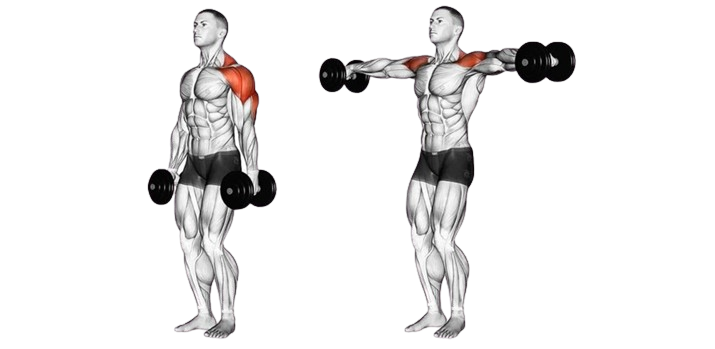

Махи гантелями в сторони

 Прийняти положення стоячи, розставивши ноги на ширині плечей
Прийняти положення стоячи, розставивши ноги на ширині плечей
Відвести таз трохи назад, та "закріпити" в такому положенні
Плечі опущені, гантелі повернуті на 45 градусів від бедра
Вивести руки в напрямку гантелей, до рівня плечей
Підконтрольовано опустити гантелі на початкову позицію
 Необхідно піднімати руками, а не ліктями
Необхідно піднімати руками, а не ліктями
Опускаючи гантелі вниз, не «скидати» вагу в швидкому темпі
Не починати рух з підйому трапецій, якщо не виходить - взяти меншу вагу
Не виручувати руки у піднятому положенні (ніяких виливань стаканів з водою)